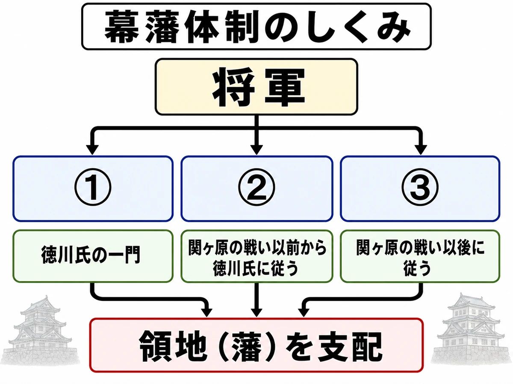
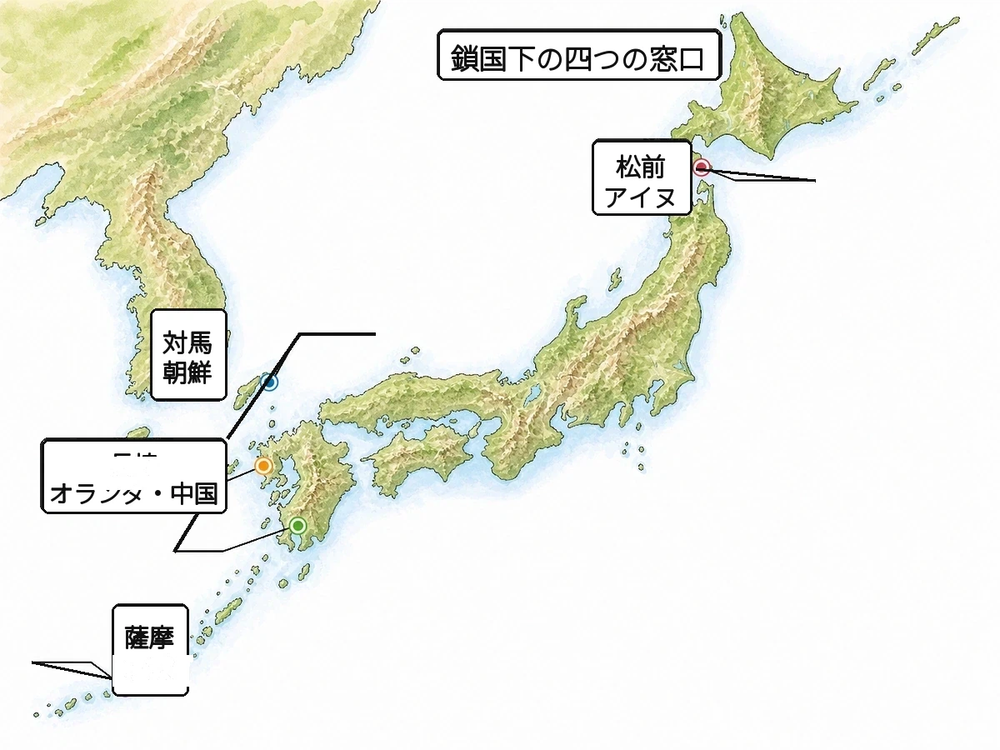

歴史 ⑧ 問題集 Web版
幕藩体制の確立
江戸幕府成立 〜 天保の改革
 いっしょに がんばろう！
いっしょに がんばろう！タブか下のリストから選んで、1問ずつ解いていこう！
要点まとめ → 一問一答 → 4択 → 記述の順で力がつくよ。
要点まとめ → 一問一答 → 4択 → 記述の順で力がつくよ。
年
年表でチェック
（ ）をタップすると答えが出るよ。まずは自分で言ってから確かめよう！
| 年代 | できごと |
|---|---|
| 1600年 | 徳川家康がで石田三成らの西軍を破る |
| 1603年 | 徳川家康がとなり江戸幕府を開く |
| 1609年 | が琉球王国に侵攻し支配下に置く |
| 1612年 | 徳川家康が幕領に対してを出す |
| 1614〜1615年 | 徳川氏が豊臣氏を滅ぼすが起こる |
| 1615年 | 大名を統制するためのが定められる |
| 1637年 | 重い年貢とキリスト教弾圧に抵抗するが起こる |
| 1639年 | 船の来航が禁止される |
| 1641年 | オランダ商館が長崎のに移され鎖国が完成する |
| 1669年 | アイヌの首長が松前藩に対して蜂起する |
| 1689年 | 長崎に清の商人を収容するが造られる |
| 1774年 | 杉田玄白らが西洋医学書を翻訳・出版する |
| 1837年 | 大坂で元役人のが反乱を起こす |
| 1841年 | 老中水野忠邦が幕府権威の回復をめざすを始める |
1
江戸幕府の成立
A要点まとめ（ ）をタップして確かめよう
📖 先に参考書で理解する
1600年、は関ヶ原の戦いで石田三成らの西軍を破り、1603年に朝廷からに任命されてを開いた。1614年から1615年ので豊臣氏を滅ぼすと、幕府の支配はいっそう安定した。将軍から1万石以上の領地を与えられた武士はと呼ばれ、徳川家との関係から親藩・・に分けられた。1615年には大名を統制するが定められ、3代将軍家光の時代には大名に江戸と領地を1年おきに行き来させるが制度化された。こうして幕府が大名（藩）を統制し、藩が領地を治めるが整えられた。
B一問一答1 / 14
関ヶ原の戦いに勝ち、1603年に江戸幕府を開いた人物は？
徳川家康
1603年に征夷大将軍となり、江戸幕府を開いた初代将軍。約260年続く江戸幕府の出発点となった。
B一問一答2 / 14
1600年、徳川家康が石田三成らを破った戦いは？
関ヶ原の戦い
1600年に徳川家康率いる東軍が石田三成ら西軍を破った天下分け目の戦い。江戸幕府成立につながった。
B一問一答3 / 14
1603年に徳川家康が開いた幕府は？
江戸幕府
1603年に徳川家康が開き、江戸を政治の中心として約260年続いた武家政権。15代慶喜まで続いた。
B一問一答4 / 14
武家政権の最高職で、徳川家康が1603年に任命されたのは？
征夷大将軍
武家政権の長を意味する朝廷の役職で、1603年に徳川家康がこの位につき、江戸幕府を開いた。
B一問一答5 / 14
1614〜1615年、徳川氏が豊臣氏を滅ぼした戦いは？
大坂の陣
1614年の冬の陣と1615年の夏の陣の二度にわたり、徳川氏が豊臣氏を滅ぼした戦い。幕府支配が安定した。
B一問一答6 / 14
将軍から1万石以上の領地を与えられた武士は？
大名
将軍から1万石以上の領地を与えられた武士で、徳川氏との関係から親藩・譜代・外様の3つに分けられた。
B一問一答7 / 14
徳川家の親族にあたる大名を何という？
親藩
徳川家の親族にあたる大名で、尾張・紀伊・水戸の御三家が代表的。徳川家に最も近い大名たち。
B一問一答8 / 14
関ヶ原の戦い以前から徳川氏に従っていた大名は？
譜代大名
関ヶ原の戦い以前から徳川氏に従っていた大名で、信頼が厚く老中など幕府の重要な役職につくことが多かった。
B一問一答9 / 14
関ヶ原の戦いの前後から徳川氏に従った大名は？
外様大名
関ヶ原の戦いの前後から徳川氏に従った大名。幕府から警戒され、江戸から遠い地方に配置されることが多かった。
B一問一答10 / 14
大名を統制するために出された法令は？
武家諸法度
1615年に2代将軍秀忠の名で出された大名統制の法令。城の修理や大名同士の結婚などにも制限を設けた。
B一問一答11 / 14
大名に江戸と領地を1年おきに行き来させた制度は？
参勤交代
3代将軍徳川家光の時代に武家諸法度で制度化された大名統制策。江戸と領地の往復で大名の財政負担が大きかった。
B一問一答12 / 14
幕府と藩が全国を支配した江戸時代の政治体制は？
幕藩体制
江戸時代の政治体制で、幕府が大名（藩主）を統制し、藩が領地を支配する二重の支配構造。約260年続いた。
B一問一答13 / 14
天皇や公家を統制するために定めた法律は？
禁中並公家諸法度
1615年に幕府が定めた朝廷統制の法令。天皇は学問に専念すべきとし、公家の政治的な活動も制限した。
B一問一答14 / 14
関ヶ原の戦いで西軍を率いた豊臣方の大名は？
石田三成
豊臣秀吉の側近として活躍した大名で、1600年の関ヶ原の戦いで西軍を率い、徳川家康に敗れて処刑された。
C実戦問題1 / 8 正しいものを選ぼう
大坂の陣の結果として正しいものはどれですか。
C実戦問題2 / 8 正しいものを選ぼう
譜代大名の説明として正しいものはどれですか。
C実戦問題3 / 8 正しいものを選ぼう
参勤交代が大名に与えた影響として最も適切なものはどれですか。
C実戦問題4 / 8 正しいものを選ぼう
参勤交代を制度化した将軍は誰？
C実戦問題5 / 8 正しいものを選ぼう
江戸幕府が朝廷・公家を統制するために定めた法令で、天皇は学問に専念すべきだとした内容のものは？
C実戦問題6 / 8 正しいものを選ぼう
将軍に直接会える1万石未満の将軍直属の家臣を何という？
C実戦問題7 / 8 正しいものを選ぼう
江戸幕府に常に置かれた最高職は？
C実戦問題8 / 8 正しいものを選ぼう
幕府が直接支配した土地を何と呼ぶ？
D記述問題1 / 3 文章で説明しよう
参勤交代はどのような目的で行われたか、説明しなさい。
指定語句 大名費用
D記述問題2 / 3 文章で説明しよう
親藩・譜代大名・外様大名の違いを説明しなさい。
指定語句 外様大名
D記述問題3 / 3 文章で説明しよう
幕藩体制とはどのようなしくみか、説明しなさい。
指定語句 大名統制
E資料問題写真を見て答えよう

(1)図中の①は、徳川氏の一門である大名を示している。①にあてはまる大名の種類を答えなさい。
(2)図中の②は、関ヶ原の戦い以前から徳川氏に従っていた大名を示している。②にあてはまる大名の種類を答えなさい。
(3)図中の③は、関ヶ原の戦い以後に徳川氏に従った大名を示している。③にあてはまる大名の種類を答えなさい。
(4)③の大名の多くは、江戸から遠い地域に配置された。その理由を、「幕府」「反抗」の語を使って説明しなさい。
2
鎖国への道
A要点まとめ（ ）をタップして確かめよう
📖 先に参考書で理解する
江戸時代初め、幕府はを与えた船に東南アジアと貿易を行わせるを奨励し、各地に日本町も生まれた。しかし1612年にを出してキリスト教を禁じ、絵踏や寺請制度で信者を取りしまった。1637年には重い年貢とキリスト教弾圧に苦しむ人々が天草四郎を大将にを起こし、幕府はこれを鎮圧すると禁教をいっそう強めた。1639年に船の来航を禁止し、1641年にはオランダ商館を長崎のに移して、3代将軍のもとでが完成した。鎖国下でも長崎・対馬・薩摩・松前の四つの窓口を通じた交流は続いた。
B一問一答1 / 14
幕府から朱印状を受けた船が東南アジアと行った貿易は？
朱印船貿易
幕府から朱印状を受けた船が東南アジアと行った貿易。徳川家康が奨励し、初期の江戸幕府では海外貿易が認められていた。
B一問一答2 / 14
幕府が海外渡航を許可した船に与えた証明書は？
朱印状
幕府が海外渡航を許可した船に与えた証明書で、将軍の朱印（赤い印章）が押された公式な渡航許可証。朱印船貿易の名の由来となった。
B一問一答3 / 14
東南アジア各地にできた日本人の町は？
日本町
朱印船貿易によって東南アジア各地にできた日本人の町で、タイのアユタヤなどが有名。鎖国前の活発な海外交流を示す証拠となっている。
B一問一答4 / 14
1612年に家康が幕領に対して出した、キリスト教の信仰を取りしまる命令は？
禁教令
キリスト教の信仰や布教を禁じた命令。幕府は支配がゆらぐのを恐れて取りしまりを強め、島原・天草一揆後さらに厳しくした。
B一問一答5 / 14
キリスト教徒を見つけるため、キリストやマリアの絵を踏ませた取りしまりは？
絵踏
キリスト教徒を見つけるため、キリストや聖母マリアの絵（踏絵）を踏ませた取りしまり。寺請制度や宗門改とともにキリシタン摘発に使われた。
B一問一答6 / 14
人々を寺に所属させ、キリスト教徒でないことを証明させた制度は？
宗門改
人々を寺院に所属（檀家）させ、キリスト教徒でないことを証明させた制度。寺請制度と組み合わせて運用され、禁教政策の中心となった。
B一問一答7 / 14
すべての人を寺院に登録させキリシタンでないことを証明させた制度は？
寺請制度
すべての人を必ず寺院に登録させ、キリシタンでないことを証明させた制度。宗門改と組み合わせて運用され、全国民の宗教を管理するしくみとなった。
B一問一答8 / 14
1637年、重い年貢やキリスト教弾圧に苦しんだ人々が起こした一揆は？
島原・天草一揆
1637年、九州で重い年貢やキリスト教弾圧に苦しんだ人々が天草四郎を大将に起こした一揆。鎮圧後、幕府は禁教を徹底し鎖国へと進んだ。
B一問一答9 / 14
島原・天草一揆で一揆軍の大将となった少年は？
天草四郎（益田時貞）
1637年の島原・天草一揆で大将となった少年。わずか16歳前後で一揆軍を率いたが、幕府軍に鎮圧されて命を落とした。
B一問一答10 / 14
江戸幕府が海外との交流を制限した体制は？
鎖国
江戸幕府が海外との交流を制限した体制で、3代家光の時代に完成。完全に断ったわけではなく、長崎・対馬・薩摩・松前の4窓口で交流は続いた。
B一問一答11 / 14
長崎に作られた人工島で、のちにオランダ商館が置かれた場所は？
出島
1641年に平戸からオランダ商館が移された長崎の人工島。扇形をしており、鎖国下で唯一の西洋との貿易窓口として機能した。
B一問一答12 / 14
鎖国下でヨーロッパで唯一貿易を許された国は？
オランダ
鎖国下でヨーロッパで唯一貿易を許された国。キリスト教の布教を行わず貿易のみに徹したため、長崎の出島で商館を構えて貿易を続けた。
B一問一答13 / 14
長崎に置かれた中国人の居住地区は？
唐人屋敷
1689年に幕府が長崎に置いた中国人の居住地区。清の商人が住み、オランダの出島とともに長崎での貿易拠点として外国人を管理した。
B一問一答14 / 14
ポルトガル船の来航が禁止された年は？
1639年
幕府がポルトガル船の来航を禁止した年。1637年の島原・天草一揆を機に禁教徹底が進み、3代将軍家光のもとで鎖国が完成へ向かった。
C実戦問題1 / 8 正しいものを選ぼう
朱印船貿易に関係して東南アジア各地にできた日本人の町を何といいますか。
C実戦問題2 / 8 正しいものを選ぼう
人々を寺に所属させ、キリスト教徒でないことを証明させた制度はどれですか。
C実戦問題3 / 8 正しいものを選ぼう
島原・天草一揆後の幕府の対応として正しいものはどれですか。
C実戦問題4 / 8 正しいものを選ぼう
鎖国下でオランダとの貿易の窓口となった場所はどこですか。
C実戦問題5 / 8 正しいものを選ぼう
島原・天草一揆で一揆軍の大将となった人物は？
C実戦問題6 / 8 正しいものを選ぼう
鎖国を完成させ、ポルトガル船の来航を禁止した将軍はだれ？
C実戦問題7 / 8 正しいものを選ぼう
1639年に来航を禁止されたヨーロッパの国は？
C実戦問題8 / 8 正しいものを選ぼう
鎖国下で長崎においてオランダとともに貿易が許されたアジアの国は？
D記述問題1 / 3 文章で説明しよう
幕府が禁教令を出してキリスト教を禁止した理由を説明しなさい。
指定語句 結びつき支配
D記述問題2 / 3 文章で説明しよう
幕府はどのようにしてキリスト教信者を見つけ出そうとしたか、そのしくみを説明しなさい。
指定語句 絵踏寺請制度
D記述問題3 / 3 文章で説明しよう
1637年に起こった島原・天草一揆とはどのような一揆か、説明しなさい。
指定語句 天草四郎年貢
E資料問題写真を見て答えよう

(1)地図中に示された4つの窓口のうち、オランダと中国との貿易が行われた窓口はどこか。
(2)地図中で、薩摩藩を通じて日本と交易した、南方の王国を何というか。
F資料の対応文にあてはまる資料を選ぼう
(1)将軍と大名の主従関係にもとづいて全国の土地と民を支配したしくみ。
(2)鎖国のもとで、長崎・対馬・薩摩・松前の4つの窓口から外国と交流したようす。
3
鎖国下の対外関係
A要点まとめ（ ）をタップして確かめよう
📖 先に参考書で理解する
鎖国下でも幕府は四つの窓口を通じて海外と交流した。長崎では、キリスト教の布教を行わなかったがで貿易を許され、によって海外情報を幕府に伝えた。同じ長崎にはが置かれ、清の商人が居住して貿易を行った。朝鮮とはが窓口となり、釜山に設けたで貿易や外交の実務を行い、将軍の代替わりにはが江戸を訪れた。琉球とはが窓口となり、蝦夷地のアイヌとは松前藩が窓口となった。長崎貿易では、金銀の流出を防ぐため銀の代わりにと呼ばれる海産物も輸出された。
B一問一答1 / 13
出島で貿易を行い、世界情勢を幕府に伝えた国は？
オランダ
キリスト教の布教を行わなかったため、鎖国下で唯一貿易を許されたヨーロッパの国。長崎の出島で貿易を行い、風説書で海外情勢を幕府に伝えた。
B一問一答2 / 13
長崎でオランダ人が滞在を許された人工島は？
出島
1641年に平戸から長崎に移されたオランダ商館が置かれた扇形の人工島で、鎖国下で唯一の西洋との貿易窓口となった。
B一問一答3 / 13
オランダが幕府に提出した海外情報の報告書は？
オランダ風説書
オランダ商館長が幕府に提出した海外情報の報告書。鎖国下でも幕府は世界の動きをすぐに知ることができた。
B一問一答4 / 13
長崎で貿易を行い、独自の居住地を与えられた国は？
清
明にかわって中国を支配した王朝で、17世紀末に長崎で貿易を許された。商人は唐人屋敷に居住し、オランダとともに長崎で貿易を行った。
B一問一答5 / 13
長崎に住む中国人を収容するために幕府が造った施設は？
唐人屋敷
1689年に幕府が長崎に造った中国人居住地で、清の商人を収容した。出島のオランダ商館と並ぶ長崎での外国人管理の拠点となった。
B一問一答6 / 13
朝鮮との外交窓口となった藩は？
対馬藩
朝鮮半島に近い地理的条件を生かし、鎖国下で朝鮮との外交・貿易を担当した藩。釜山に倭館を設け、朝鮮通信使の派遣の窓口にもなった。
B一問一答7 / 13
対馬藩が朝鮮の釜山に設けた居留地は？
倭館
対馬藩が朝鮮の釜山に設けた日本の居留地。江戸時代には対馬藩士や商人が滞在し、朝鮮との貿易や外交の実務がここで行われた。
B一問一答8 / 13
朝鮮から江戸幕府へ派遣された使節は？
朝鮮通信使
対馬藩を窓口に、将軍の代替わりを祝う目的で朝鮮から江戸幕府へ派遣された使節。両国の友好を示し、各地で文化交流も行われた。
B一問一答9 / 13
鎖国下で琉球との窓口となった藩は？
薩摩藩
島津氏の藩で、1609年に琉球王国に侵攻して支配下に置いた。琉球と中国の中継貿易で大きな利益を得て、鎖国下の窓口の一つとなった。
B一問一答10 / 13
鎖国下でアイヌとの窓口となった藩は？
松前藩
蝦夷地（現在の北海道）の南部に置かれた藩で、鎖国下のアイヌとの窓口を担った。アイヌとの交易を独占し、鮭・昆布・毛皮などを手に入れた。
B一問一答11 / 13
銀の代わりに日本が長崎貿易で輸出した海産物は？
俵物
干しなまこ・干しアワビ・ふかひれなどの俵詰めの海産物で、長崎貿易で清に輸出された。金銀の代わりに使われ、金銀の海外流出を防ぐ目的があった。
B一問一答12 / 13
対馬藩が倭館を設けた朝鮮の港町は？
釜山
朝鮮半島の南端に位置し、対馬から最も近い朝鮮の港町。対馬藩がここに倭館を設け、朝鮮との貿易や外交の実務の拠点とした。
B一問一答13 / 13
薩摩藩が琉球王国に侵攻した年は？
1609年
島津氏の薩摩藩が約3000の兵を送り琉球王国に侵攻して支配下に置いた年。以後、琉球は薩摩支配と中国との中継貿易を両立させた。
C実戦問題1 / 8 正しいものを選ぼう
江戸時代、将軍の代替わりごとに来日した外国からの使節は？
C実戦問題2 / 8 正しいものを選ぼう
琉球王国を支配下に置いた藩はどれですか。
C実戦問題3 / 8 正しいものを選ぼう
アイヌ民族と交易を行い、北海道南部を支配した藩はどれですか。
C実戦問題4 / 8 正しいものを選ぼう
銀の代わりに日本が長崎貿易で輸出した海産物を何という？
C実戦問題5 / 8 正しいものを選ぼう
朝鮮との貿易が行われた場所はどこ？
C実戦問題6 / 8 正しいものを選ぼう
四つの窓口の組み合わせとして正しいのは？
C実戦問題7 / 8 正しいものを選ぼう
1609年に琉球王国に侵攻した藩は？
C実戦問題8 / 8 正しいものを選ぼう
朝鮮通信使の来日目的は？
D記述問題1 / 2 文章で説明しよう
鎖国下でオランダだけがヨーロッパの国の中で貿易を許された理由を説明しなさい。
指定語句 オランダ
D記述問題2 / 2 文章で説明しよう
長崎・対馬・薩摩・松前の四つの窓口が、それぞれどこと交流したかを説明しなさい。
指定語句 朝鮮アイヌ
4
琉球とアイヌ
A要点まとめ（ ）をタップして確かめよう
📖 先に参考書で理解する
1609年、のはに侵攻して支配下に置いたが、独立国の形は残し、中国の品を日本へ送るの利益を独占した。琉球国王や将軍の代替わりには、薩摩藩を経由してが江戸へ送られ、幕府の権威を示した。一方、北海道など蝦夷地に住むとの交易はが独占し、鮭・昆布・毛皮などを手に入れた。しかし不公平な交易への不満から、1669年にアイヌの首長が松前藩に対して蜂起したものの、鎮圧されてアイヌの自治はさらに弱まった。
B一問一答1 / 14
薩摩藩に支配されながら、中国とも関係を保った王国は？
琉球王国
現在の沖縄県にあたる地域で、15世紀に成立した独立した王国。中国との朝貢貿易や東南アジア諸国との中継貿易で繁栄した。
B一問一答2 / 14
琉球の支配を認められ、貿易の利益を独占したのは何藩？
薩摩藩
島津氏の藩で、1609年に琉球王国を攻めて支配下に置いた。琉球を独立国の形のままにし、中国との中継貿易の利益を独占した。
B一問一答3 / 14
琉球国王や将軍の代替わりの際に江戸へ送られた使節は？
琉球使節
琉球国王や将軍の代替わりの際に薩摩藩を経由して江戸へ送られた使節。華やかな行列で江戸に向かい、幕府の権威を国内外に示した。
B一問一答4 / 14
琉球が中国の品を日本へ送り利益を得た貿易は？
中継貿易
中国と日本の間に位置する琉球が、中国の品を日本へ送り、日本の品を中国へ送る形で利益を得た貿易。琉球王国の繁栄を支えた仕組み。
B一問一答5 / 14
薩摩藩が琉球から取り上げ、直接支配した島々は？
奄美群島
薩摩藩が1609年の琉球侵攻後に琉球から取り上げて直接支配した島々。砂糖（黒糖）の生産が盛んで、薩摩藩の重要な財源となった。
B一問一答6 / 14
北海道などに住み、独自の文化をもつ人々は？
アイヌ民族
北海道などに住み、独自の言語や文化をもつ人々。松前藩との交易で漁業や狩猟を営み、1669年のシャクシャインの戦いを起こした。
B一問一答7 / 14
江戸時代の北海道や千島列島、樺太の呼び方は？
蝦夷地
江戸時代の北海道・千島列島・樺太の総称で、アイヌ民族が暮らした地域。鎖国下では松前藩がアイヌとの交易窓口を担った。
B一問一答8 / 14
アイヌとの交易を独占し、蝦夷地の窓口となった藩は？
松前藩
蝦夷地南部に置かれた藩で、鎖国下のアイヌとの窓口を担った。米が取れないため石高ではなくアイヌとの交易権で成り立つ特殊な藩だった。
B一問一答9 / 14
松前藩との交易をめぐる不満から、アイヌの人々が起こした戦いは？
シャクシャインの戦い
1669年に、首長シャクシャインを中心としたアイヌの人々が、松前藩との不公平な交易への不満から起こした戦い。松前藩に鎮圧された。
B一問一答10 / 14
1669年にアイヌ民族の首長として蜂起した人物は？
シャクシャイン
1669年にアイヌ民族の首長として、松前藩の不公平な交易に抗議して蜂起したアイヌの指導者。戦いは鎮圧され、アイヌの自治は弱まった。
B一問一答11 / 14
シャクシャインが蜂起した年は？
1669年
首長シャクシャインを中心としたアイヌの人々が、松前藩との不公平な交易への不満から蜂起した年。鎮圧されアイヌの自治は大きく後退した。
B一問一答12 / 14
薩摩藩が琉球王国に侵攻した年は？
1609年
島津氏の薩摩藩が約3000の兵で琉球王国に侵攻し、支配下に置いた年。以後、琉球は薩摩支配と中国との中継貿易を両立させた。
B一問一答13 / 14
松前藩がアイヌとの交易で主に手に入れた産物は？
鮭・昆布・毛皮
松前藩がアイヌとの交易で主に手に入れた蝦夷地の特産。豊かな自然から得られる産物で、本州にも運ばれて高い価値で取引された。
B一問一答14 / 14
薩摩藩を治めていた大名の氏族は？
島津氏
鎌倉時代から薩摩を治めた大名の名門。1609年に琉球王国に侵攻して支配下に置き、幕末には西郷隆盛らを生んで倒幕の中心的な役割を果たした。
C実戦問題1 / 8 正しいものを選ぼう
シャクシャインの戦いが起こった背景として適切なものはどれですか。
C実戦問題2 / 8 正しいものを選ぼう
琉球王国を支配下に置き、貿易の利益を独占した藩は？
C実戦問題3 / 8 正しいものを選ぼう
薩摩藩が琉球から取り上げて直接支配した島々は？
C実戦問題4 / 8 正しいものを選ぼう
シャクシャインの蜂起の主な原因は？
C実戦問題5 / 8 正しいものを選ぼう
1609年に琉球王国に侵攻した藩は？
C実戦問題6 / 8 正しいものを選ぼう
シャクシャインの蜂起の結果はどうなった？
C実戦問題7 / 8 正しいものを選ぼう
薩摩藩が琉球を通じて間接的に交易していた国は？
C実戦問題8 / 8 正しいものを選ぼう
シャクシャインの蜂起は何年に起きた？
D記述問題1 / 2 文章で説明しよう
薩摩藩が琉球王国を独立国の形のまま支配した理由を説明しなさい。
指定語句 中継貿易
D記述問題2 / 2 文章で説明しよう
シャクシャインがアイヌの人々を率いて松前藩に蜂起した理由を説明しなさい。
指定語句 松前藩不公平
5
江戸時代の身分制度
A要点まとめ（ ）をタップして確かめよう
📖 先に参考書で理解する
江戸時代の身分は大まかにと呼ばれる区分で分けられ、名字・帯刀の特権を持つは全人口の約7％にすぎなかったが、政治や軍事を独占した。人口の約85％を占めたは村に住んで年貢を納め、収穫の5割を領主に納めるのような重い負担を負うこともあった。百姓は5戸を1組にまとめて連帯責任を負わせるによって統制され、土地を持つと、土地を持たず小作を行う水のみ百姓に分かれていた。都市に住み商工業を営むも税を負担し、このほかにえた・という差別を受けた身分もあった。負担に耐えかねた百姓が集団で行動するも各地で起こった。
B一問一答1 / 14
江戸時代の身分の大まかな分け方は？
士農工商
江戸時代の身分の大まかな分け方で、武士・百姓・町人などに分けられた。実際には公家・神職・えた・ひにんなどの身分もあった。
B一問一答2 / 14
江戸時代に名字・帯刀などの特権を持ち、政治を担った身分は？
武士
江戸時代に名字・帯刀などの特権を持ち、政治・軍事を担った身分。全人口の約7％だが、支配階級として大多数の百姓・町人を統治した。
B一問一答3 / 14
村に住み、年貢を納めた人々で江戸時代の人口の多くを占めた身分は？
百姓
村に住み、米などの年貢を領主に納めた身分。江戸時代の人口の約85％を占め、農民だけでなく漁業や林業に関わる人々も百姓に含まれた。
B一問一答4 / 14
都市に住む商人や職人を何という？
町人
城下町に住み、商売や手仕事を営んで税を納めた身分。商人と職人を指し、元禄文化や化政文化の担い手になった。
B一問一答5 / 14
百姓を数戸ごとにまとめ、年貢納入や犯罪防止に連帯責任を負わせた制度は？
五人組
百姓を5戸1組にまとめ、年貢納入や犯罪防止に連帯責任を負わせた制度。互いに監視し合うしくみで、村支配のしくみとして利用された。
B一問一答6 / 14
百姓が収穫した米などを領主に納める税は？
年貢
百姓が収穫した米などを領主に納める税で、幕府や藩の財政の中心。収穫の4〜5割を納める「四公六民」や「五公五民」が多く、百姓の生活を圧迫した。
B一問一答7 / 14
自分の土地を持ち、村役人として村の自治を行った百姓は？
本百姓
自分の土地を持って耕作し、年貢を負担した百姓。名主（庄屋）や組頭などの村役人を務め、村の運営や自治の中心を担った。
B一問一答8 / 14
土地を持たず、小作などを行っていた百姓は？
水のみ百姓
自分の土地を持たず、本百姓から土地を借りて耕作する小作を行っていた百姓。土地を持つ本百姓に対して貧しい暮らしを強いられた。
B一問一答9 / 14
居住や職業、服装を厳しく制限され差別を受けた身分は？
えた・ひにん
居住や職業、服装を厳しく制限され、不当な差別を受けた身分。身分制度による差別は明治の解放令で身分上は廃止されたが、社会的差別は長く続いた。
B一問一答10 / 14
武士だけに許された、姓を名乗り刀を差す特権は？
名字・帯刀
武士だけに許された、姓を名乗り刀を差す特権。武士の身分を象徴し、百姓や町人など他の身分には原則として許されず、身分制度の柱となった。
B一問一答11 / 14
武士が全人口に占めていた割合は？
約7％
江戸時代に武士が全人口に占めていた割合。少数の武士が約85％の百姓や町人を支配する構造で、身分制度のもとに政治・軍事を独占した。
B一問一答12 / 14
町人が住み、商工業に従事していた場所は？
城下町
大名の城を中心に発達した都市で、武士の住む地区と町人の住む地区などに分かれていた。
B一問一答13 / 14
収穫の5割を年貢として納め、5割を手元に残す割合は？
五公五民
収穫の5割を年貢として領主に納め、残り5割を百姓の手元に残す割合のこと。「5割が公（領主）、5割が民」を表し、年貢の負担の重さを示す。
B一問一答14 / 14
百姓が年貢の軽減などを訴えるために集団で行動することは？
百姓一揆
百姓が年貢の軽減や役人の交代を求めて集団で行動すること。江戸後期の18世紀以降に激増し、からかさ連判状で首謀者を隠す工夫も行われた。
C実戦問題1 / 8 正しいものを選ぼう
江戸時代、数戸の百姓をまとめて年貢納入や犯罪防止に連帯責任を負わせた制度は何ですか。
C実戦問題2 / 8 正しいものを選ぼう
江戸時代に全人口の約85％を占め、年貢を納めた身分は？
C実戦問題3 / 8 正しいものを選ぼう
城下町に住み、商工業に従事して営業税を納めた身分は？
C実戦問題4 / 8 正しいものを選ぼう
自分の土地を持ち、村役人として村の自治を行った百姓を何という？
C実戦問題5 / 8 正しいものを選ぼう
土地を持たず小作などを行っていた百姓を何という？
C実戦問題6 / 8 正しいものを選ぼう
武士が全人口に占めていた割合は約何％？
C実戦問題7 / 8 正しいものを選ぼう
「五公五民」とはどのような意味？
C実戦問題8 / 8 正しいものを選ぼう
居住や職業を厳しく制限され不当な差別を受けた身分は？
D記述問題1 / 3 文章で説明しよう
五人組はどのようなしくみか、説明しなさい。
指定語句 五人組
D記述問題2 / 3 文章で説明しよう
本百姓と水のみ百姓の違いを説明しなさい。
指定語句 土地小作
D記述問題3 / 3 文章で説明しよう
江戸時代の百姓が負った年貢の負担について、「五公五民」の語を使って説明しなさい。
指定語句 五公五民
6
江戸幕府政治と三大改革
A要点まとめ（ ）をタップして確かめよう
📖 先に参考書で理解する
戦乱が終わった江戸前期には、武力ではなく儒学や法を重んじるが進められた。5代将軍は朱子学を重視して生類憐みの令を出し、6・7代将軍に仕えたは貨幣の質を戻し長崎貿易を制限するを行った。老中は株仲間を奨励して商業の力で幕府収入を増やそうとしたが、わいろ政治と批判された。その後、8代将軍徳川吉宗の、老中による、老中水野忠邦によるという江戸の三大改革が行われ、いずれも幕府財政の立て直しや社会の引きしめをめざした。
B一問一答1 / 11
武力ではなく、儒学や法を重視した政治を何という？
文治政治
武力ではなく、儒学（朱子学）や法を重視した政治。戦乱が終わり、4代家綱から5代綱吉のころに重視された。
B一問一答2 / 11
朱子学を重視し、生類憐みの令を出した5代将軍は？
徳川綱吉
5代将軍で、朱子学を重視して文治政治を進め、生類憐みの令を出した。元禄期の将軍として元禄文化が栄えた時期にあたる。
B一問一答3 / 11
新井白石が進めた政治を何という？
正徳の治
6・7代将軍に仕えた新井白石による政治。貨幣の質を戻し、長崎貿易を制限して金銀の海外流出を防ごうとした。
B一問一答4 / 11
老中として株仲間の奨励など商業を利用して幕府の収入を増やそうとしたのは誰？
田沼意次
株仲間の奨励、長崎貿易の拡大、印旛沼の干拓などを進めたが、わいろ政治と批判された。
B一問一答5 / 11
8代将軍徳川吉宗が行った改革は？
享保の改革
8代将軍徳川吉宗が行った改革。新田開発や目安箱の設置、公事方御定書の制定などを進め、幕府財政の立て直しをめざした。
B一問一答6 / 11
老中松平定信が、田沼政治の後に行った改革は？
寛政の改革
田沼政治の後、老中松平定信が行った改革。ぜいたく禁止や米の備え、朱子学の重視で社会を引きしめようとした。
B一問一答7 / 11
老中水野忠邦が、幕府の権威回復をめざして行った改革は？
天保の改革
1841年から老中水野忠邦が幕府権威の回復をめざして行った改革。株仲間の解散や上知令を進めたが反発を受けて失敗した。
B一問一答8 / 11
寛政の改革を行った老中はだれ？
松平定信
田沼政治の後に老中となり、寛政の改革を行った。ぜいたく禁止や米の備え、朱子学の重視で社会を引きしめようとした。
B一問一答9 / 11
天保の改革で、物価上昇の原因と考えられて解散を命じられた商人の同業者組合は？
株仲間
営業の独占を認められた商人の同業者組合。田沼意次が奨励したが、天保の改革で水野忠邦が物価を下げるため解散させた。
B一問一答10 / 11
新井白石が金銀の海外流出を防ぐために制限した貿易は？
長崎貿易
新井白石が正徳の治の中で取り組んだ政策。輸入をおさえる目的で、長崎貿易を制限し、金銀が海外へ流出するのを防ごうとした。
B一問一答11 / 11
6・7代将軍に仕え、正徳の治に関わった人物は？
新井白石
6代・7代将軍に仕えた朱子学者で、正徳の治を進めた。貨幣の質を戻し、長崎貿易を制限して金銀の海外流出を防ごうとした。
C実戦問題1 / 8 正しいものを選ぼう
正徳の治を進めた人物は？
C実戦問題2 / 8 正しいものを選ぼう
江戸幕府政治の正しい流れは？
C実戦問題3 / 8 正しいものを選ぼう
田沼意次の政治の特徴は？
C実戦問題4 / 8 正しいものを選ぼう
次の改革を古い順に並べたものは？
C実戦問題5 / 8 正しいものを選ぼう
生類憐みの令を出した将軍は？
C実戦問題6 / 8 正しいものを選ぼう
享保の改革で行われた政策は？
C実戦問題7 / 8 正しいものを選ぼう
株仲間とはどのような組織？
C実戦問題8 / 8 正しいものを選ぼう
田沼意次の政治が批判された理由は？
D記述問題1 / 3 文章で説明しよう
文治政治とはどのような政治か、説明しなさい。
指定語句 文治政治
D記述問題2 / 3 文章で説明しよう
田沼意次の政治が批判された理由を説明しなさい。
指定語句 株仲間わいろ
D記述問題3 / 3 文章で説明しよう
8代将軍徳川吉宗が行った享保の改革の目的を説明しなさい。
指定語句 徳川吉宗財政
7
江戸の交通と商業・都市
A要点まとめ（ ）をタップして確かめよう
📖 先に参考書で理解する
幕府は江戸の日本橋を起点に東海道など五つの道をまとめたを整備し、街道沿いには旅人や大名行列が泊まるが発達した。人や物の通行を取りしまるも置かれ、手紙や荷物を運ぶのしくみも発達した。海上では東北地方と江戸を結ぶや、大坂から江戸へ酒を運ぶなどの水上交通も発展した。江戸・大坂・京都はと呼ばれ、なかでも大坂は諸藩がを置いて年貢米や特産物を集めたことから「」と呼ばれた。商業の発展にともない、金貨・銀貨を交換するも活躍した。
B一問一答1 / 13
江戸を中心に整備された主要道路をまとめて何という？
五街道
江戸の日本橋を起点とした主要道路の総称。東海道・中山道・甲州道中・日光道中・奥州道中の五つで、参勤交代や全国支配を支えた。
B一問一答2 / 13
旅人や大名行列が休んだり泊まったりする町は？
宿場町
街道沿いに発達した町で、本陣や旅籠、問屋場などが置かれて旅人や大名行列が休んだり泊まったりした。商業の中心にもなった。
B一問一答3 / 13
人や物の通行を取りしまる施設は？
関所
街道に置かれて人や物の通行を取りしまった場所。幕府は江戸への武器の持ち込みと、人質の女性が逃げ出すのを特に警戒した。
B一問一答4 / 13
手紙や荷物を運ぶ人やしくみを何という？
飛脚
江戸時代に手紙や荷物を運ぶ役目を果たした人やしくみ。江戸と京都・大坂を数日で結び、商業の発展や情報伝達を支えた。
B一問一答5 / 13
江戸と京都を結ぶ、海沿いを通る五街道の一つは？
東海道
江戸と京都を結ぶ、太平洋側の海沿いを通る五街道の一つ。五十三の宿場が置かれ、参勤交代の大名行列でもっとも多く利用された。
B一問一答6 / 13
東北地方と江戸を結んだ海上交通路を何という？
東廻り航路
東北地方の太平洋側を通って江戸を結んだ海の道。日本海側を通って大坂を結んだのは西廻り航路。
B一問一答7 / 13
大坂から江戸へ酒などを運んだ廻船は？
樽廻船
大坂から江戸へ酒樽などを運んだ船。同じ航路には雑貨を運ぶ菱垣廻船もあり、江戸の暮らしを支えた。
B一問一答8 / 13
江戸・大坂・京都の三つの大都市をまとめて何という？
三都
江戸時代に発展した三つの大都市の総称。江戸は政治、大坂は商業（天下の台所）、京都は文化の中心として発展し、全国の中核となった。
B一問一答9 / 13
諸藩が大坂に置き、年貢米や特産物を保管・販売した施設は？
蔵屋敷
諸藩が大坂に置き、年貢米や特産物を保管・販売した施設。集まった物資の取引で大坂の商業が発達し「天下の台所」と呼ばれた。
B一問一答10 / 13
営業を独占する権利を認められた商人の同業者組合は？
株仲間
営業の独占を認められた商人の同業者組合。田沼意次の政治で奨励されたが、天保の改革で水野忠邦が物価を下げるため解散させた。
B一問一答11 / 13
金貨・銀貨などの交換を行った商人は？
両替商
金貨・銀貨・銭貨の交換を行った商人。東日本は金貨、西日本は銀貨が多く使われ、その交換で大商人に成長した。
B一問一答12 / 13
江戸時代の政治の中心で、人口が多い大都市となった都市は？
江戸
徳川将軍の居城が置かれた城下町で、参勤交代による武士の集中もあり18世紀には人口100万を超える世界有数の大都市となった。
B一問一答13 / 13
全国の年貢米や特産物が集まった大坂は何と呼ばれた？
天下の台所
全国の年貢米や特産物が集まった大坂を指す呼び名。諸藩の蔵屋敷が置かれて取引が盛んになり、商業の中心都市として大きく発展した。
C実戦問題1 / 8 正しいものを選ぼう
宿場町とはどのような町？
C実戦問題2 / 8 正しいものを選ぼう
大坂から江戸へ酒を専門に運んだ廻船は？
C実戦問題3 / 8 正しいものを選ぼう
大坂が「天下の台所」と呼ばれた理由は？
C実戦問題4 / 8 正しいものを選ぼう
株仲間とはどのような組織？
C実戦問題5 / 8 正しいものを選ぼう
江戸時代に手紙や荷物を運んだのは？
C実戦問題6 / 8 正しいものを選ぼう
東廻り航路が結んだ地域は？
C実戦問題7 / 8 正しいものを選ぼう
両替商とはどのような商人？
C実戦問題8 / 8 正しいものを選ぼう
江戸時代の三都の役割の組み合わせは？
D記述問題1 / 2 文章で説明しよう
幕府が街道に関所を置いた目的を説明しなさい。
指定語句 関所
D記述問題2 / 2 文章で説明しよう
大坂が「天下の台所」と呼ばれた理由を説明しなさい。
指定語句 蔵屋敷
8
江戸の産業と社会不安
A要点まとめ（ ）をタップして確かめよう
📖 先に参考書で理解する
幕府や藩は年貢収入を増やすため干拓や用水路の整備を進めてを行い、耕地面積は大きく広がった。農村では木綿や菜種など、売って現金収入を得るためのの栽培が広がり、いわしを干して作った肥料のも使われた。問屋が農家に原料や道具を貸して製品を作らせるも発達し、佐渡金山などのは幕府財政を支えた。しかし江戸後期には冷害によるが相次ぎ、農民が年貢の軽減などを求めるや、都市の民衆が米を買いしめた商人を襲うが増えた。1837年には大坂で元役人のの乱も起こった。
B一問一答1 / 14
新しく田を開いて農地を増やすことを何という？
新田開発
新しく田を開いて農地を増やすこと。幕府や藩は年貢収入を増やすため、干拓や用水路の整備を進め、耕地面積は2倍近くに拡大した。
B一問一答2 / 14
売って現金収入を得るために作る作物は？
商品作物
売って現金収入を得るために作る作物。木綿・菜種・藍・紅花などが栽培され、農村への貨幣経済の広がりと関係した。
B一問一答3 / 14
いわしを加工して作った肥料は？
干鰯
いわしを天日で干して作った肥料。お金を出して買う効果の高い肥料として、商品作物の栽培で広く使われた。
B一問一答4 / 14
佐渡金山、石見銀山、別子銅山などのように、金銀銅を産出した場所は？
鉱山
佐渡金山・石見銀山・別子銅山などは江戸時代に金銀銅を産出し、貨幣づくりや長崎での輸出にも使われ、幕府財政を支えた。
B一問一答5 / 14
問屋が原料や道具を貸し、農家などに製品を作らせるしくみは？
問屋制家内工業
問屋が農家に原料や道具を貸し、できた製品を引き取る生産のしくみ。のちの工場制手工業へとつながった。
B一問一答6 / 14
現在の新潟県にあり、金を多く産出した鉱山は？
佐渡金山
現在の新潟県にある江戸幕府直轄の鉱山で、金を多く産出した。貨幣づくりに使われ、江戸幕府の財政を支えた重要な金山だった。
B一問一答7 / 14
冷害や災害などで作物が不足し、人々の生活が苦しくなることは？
ききん
冷害や災害などで作物が不足し、人々の生活が苦しくなること。江戸後期には天明のききん・天保のききんが大きな影響を与えた。
B一問一答8 / 14
農民が年貢の軽減や役人の交代を求めて起こした行動は？
百姓一揆
農民が年貢の軽減や役人の交代を求めて集団で起こした行動。江戸後期にききんと連動して激増し、農村の不満が高まったことを示す。
B一問一答9 / 14
都市の民衆が米を買いしめた商人などを襲った行動は？
打ちこわし
都市の民衆がききんによる米価上昇に怒り、米を買いしめた商人や役人などを襲った行動。江戸後期に天保のききんで多発した。
B一問一答10 / 14
1837年、大坂町奉行所の元役人が起こした反乱は？
大塩平八郎の乱
1837年、大坂町奉行所の元役人大塩平八郎が、天保のききんで困窮する民衆を救おうとして起こした反乱。幕府に大きな衝撃を与えた。
B一問一答11 / 14
1837年に大坂で反乱を起こした元役人はだれ？
大塩平八郎
1837年に大坂町奉行所の元役人として、天保のききんで困窮する民衆を救おうとして大坂で蜂起した陽明学者。
B一問一答12 / 14
田沼意次の政治のころに起こった、江戸時代の代表的なききんは？
天明のききん
1782年ごろから始まった江戸時代の代表的なききんで、田沼意次の政治への批判を強める一因となった。
B一問一答13 / 14
大塩平八郎の乱のきっかけにもなった、江戸後期のききんは？
天保のききん
1830年代に起こった大ききんで、米価上昇と打ちこわしが多発し、大塩平八郎の乱の背景にもなった。
B一問一答14 / 14
新田開発で幕府や藩が増やそうとした収入は？
年貢
百姓が収穫物を領主に納める税。幕府や藩は新田開発で田畑を増やし、米を中心とする年貢収入を増やそうとした。
C実戦問題1 / 8 正しいものを選ぼう
干鰯とはどのようなもの？
C実戦問題2 / 8 正しいものを選ぼう
問屋制家内工業とはどのような仕組み？
C実戦問題3 / 8 正しいものを選ぼう
都市で米を買いしめた商人などが襲われた行動は？
C実戦問題4 / 8 正しいものを選ぼう
大塩平八郎の乱とはどのような事件？
C実戦問題5 / 8 正しいものを選ぼう
佐渡金山で主に産出された資源は？
C実戦問題6 / 8 正しいものを選ぼう
田沼意次の政治のころに起こった代表的なききんは？
C実戦問題7 / 8 正しいものを選ぼう
大塩平八郎の乱の背景となったききんは？
C実戦問題8 / 8 正しいものを選ぼう
江戸時代に栽培された商品作物の組み合わせは？
D記述問題1 / 2 文章で説明しよう
問屋制家内工業とはどのようなしくみか、説明しなさい。
指定語句 問屋制家内工業
D記述問題2 / 2 文章で説明しよう
江戸後期に百姓一揆や打ちこわしが増えた理由を説明しなさい。
指定語句 ききん米価
9
江戸の文化と学問・教育
A要点まとめ（ ）をタップして確かめよう
📖 先に参考書で理解する
17世紀後半、大坂や京都など上方を中心に町人が担ったが栄え、俳諧を芸術に高めたや、人形浄瑠璃の脚本を書いたらが活躍した。19世紀前半には江戸を中心に庶民文化のが広がり、葛飾北斎や歌川広重による風景画のが人気を集めた。学問では、幕府が重んじた儒学の一派であるのほか、オランダ語で西洋の医学や科学を学ぶ、日本古来の考え方を明らかにしようとするが発展した。杉田玄白らは1774年に西洋医学書を出版し、庶民の子どもはで読み書きを学んだ。
B一問一答1 / 14
17世紀後半、上方を中心に町人が担った文化は？
元禄文化
17世紀後半、大坂・京都の上方を中心に栄えた町人文化で、井原西鶴・松尾芭蕉・近松門左衛門らが活躍した。
B一問一答2 / 14
19世紀前半、江戸を中心に広がった庶民文化は？
化政文化
19世紀前半に江戸を中心に広がった庶民文化。葛飾北斎・歌川広重らの浮世絵や小説などが発展し、庶民の生活に根ざした文化となった。
B一問一答3 / 14
俳諧を芸術に高め、『奥の細道』で知られる人物は？
松尾芭蕉
元禄文化を代表する俳人で、俳諧を芸術の域に高めた。代表作は東北・北陸を旅した紀行文『奥の細道』。
B一問一答4 / 14
人形浄瑠璃の脚本を書き、義理や人情を題材にした人物は？
近松門左衛門
元禄文化を代表する脚本家で、人形浄瑠璃や歌舞伎の脚本を多く書き、町人の義理や人情を題材にした作品で知られる。
B一問一答5 / 14
町人の風俗や風景を題材にした絵は？
浮世絵
町人の風俗や風景を題材にした多色刷りの絵で、化政文化では葛飾北斎・歌川広重らによる風景画も発展した。
B一問一答6 / 14
武士や町人の生活を浮世草子に書いた人物は？
井原西鶴
元禄文化を代表する作家で、武士や町人の生活を題材にした浮世草子を書いた。代表作に『日本永代蔵』など。
B一問一答7 / 14
化政文化を代表する風景画の浮世絵師二人は？
葛飾北斎・歌川広重
北斎『富嶽三十六景』、広重『東海道五十三次』が代表作。江戸の庶民文化を代表する。
B一問一答8 / 14
主従関係や上下関係を重んじる儒学の一派は？
朱子学
主人と家来、目上と目下の関係を大切にする儒学の一派。幕府が重んじ、武士が学ぶべき学問とされた。
B一問一答9 / 14
庶民の子どもが読み書きや計算を学んだ場所は？
寺子屋
江戸時代に庶民の子どもが読み書きや計算（そろばん）を学んだ場所で、僧侶や浪人などが教師を務めた。
B一問一答10 / 14
オランダ語を通じて西洋の医学や科学を学ぶ学問は？
蘭学
オランダ語を通じて西洋の医学や科学を学ぶ学問。長崎の出島を通じて入った西洋知識を学び、開国前の西洋理解につながった。
B一問一答11 / 14
古事記などを研究し、日本古来の考え方を明らかにしようとした学問は？
国学
古事記や万葉集など日本古来の文献を研究し、日本独自の考え方を明らかにしようとした学問。本居宣長が大成した。
B一問一答12 / 14
全国を測量し、正確な日本地図作成に貢献した人物は？
伊能忠敬
江戸後期に全国の海岸線を歩いて測量し、正確な日本地図（大日本沿海輿地全図）を作った人物。
B一問一答13 / 14
『解体新書』の翻訳・出版に関わり、のちに『蘭学事始』を著した医師は？
杉田玄白
前野良沢らとともに西洋医学書を翻訳し、晩年には蘭学導入の苦労を『蘭学事始』に記した。
B一問一答14 / 14
杉田玄白らが翻訳した西洋医学書は？
解体新書
杉田玄白・前野良沢らが翻訳して1774年に出版した西洋医学書で、蘭学の発展を示す代表的な書物。
C実戦問題1 / 8 正しいものを選ぼう
松尾芭蕉の業績は？
C実戦問題2 / 8 正しいものを選ぼう
化政文化に関係が深い人物の組み合わせは？
C実戦問題3 / 8 正しいものを選ぼう
『解体新書』の出版に関係が深い人物は？
C実戦問題4 / 8 正しいものを選ぼう
本居宣長と関係が深い学問は？
C実戦問題5 / 8 正しいものを選ぼう
近松門左衛門の業績は？
C実戦問題6 / 8 正しいものを選ぼう
化政文化の浮世絵で有名な人物の組み合わせは？
C実戦問題7 / 8 正しいものを選ぼう
井原西鶴が書いた文学作品の形式は？
C実戦問題8 / 8 正しいものを選ぼう
蘭学とはどのような学問？
D記述問題1 / 2 文章で説明しよう
元禄文化と化政文化の違いを説明しなさい。
指定語句 上方江戸
D記述問題2 / 2 文章で説明しよう
杉田玄白らがヨーロッパの解剖書を翻訳して出版した『解体新書』は、どのような学問が発展するきっかけとなったか、説明しなさい。
指定語句 蘭学オランダ語
解答
年表でチェック
関ヶ原の戦い 征夷大将軍 薩摩藩 禁教令 大坂の陣 武家諸法度 島原・天草一揆 ポルトガル 出島 シャクシャイン 唐人屋敷 解体新書 大塩平八郎 天保の改革
1 江戸幕府の成立
A 要点まとめ① 徳川家康 ② 征夷大将軍 ③ 江戸幕府 ④ 大坂の陣 ⑤ 大名 ⑥ 譜代大名 ⑦ 外様大名 ⑧ 武家諸法度 ⑨ 参勤交代 ⑩ 幕藩体制
B 一問一答(1) 徳川家康 (2) 関ヶ原の戦い (3) 江戸幕府 (4) 征夷大将軍 (5) 大坂の陣 (6) 大名 (7) 親藩 (8) 譜代大名 (9) 外様大名 (10) 武家諸法度 (11) 参勤交代 (12) 幕藩体制 (13) 禁中並公家諸法度 (14) 石田三成
C 実戦問題(1) イ（豊臣氏が滅亡した） (2) イ（古くからの徳川氏の家臣） (3) エ（大名の財政負担が大きくなった） (4) ウ（徳川家光） (5) ア（禁中並公家諸法度） (6) ウ（旗本） (7) イ（老中） (8) エ（幕領）
D 記述問題
(1) 大名に江戸と領地を1年おきに往復させることで多くの費用を負わせ、幕府に反抗する力を弱めるため。
(2) 親藩は徳川家の一族、譜代は関ヶ原の戦い以前からの家臣で、外様大名は関ヶ原の戦い以後に従った大名として江戸から遠い地に配置された。
(3) 幕府が大名（藩）を統制し、藩がそれぞれの領地を治めることで全国を支配するしくみ。
E 資料問題(1) 親藩 (2) 譜代大名 (3) 外様大名 (4) 幕府に反抗するおそれがあったため、江戸から遠ざけて配置した。（例）
2 鎖国への道
A 要点まとめ① 朱印状 ② 朱印船貿易 ③ 禁教令 ④ 島原・天草一揆 ⑤ ポルトガル ⑥ 出島 ⑦ 徳川家光 ⑧ 鎖国
B 一問一答(1) 朱印船貿易 (2) 朱印状 (3) 日本町 (4) 禁教令 (5) 絵踏 (6) 宗門改 (7) 寺請制度 (8) 島原・天草一揆 (9) 天草四郎（益田時貞） (10) 鎖国 (11) 出島 (12) オランダ (13) 唐人屋敷 (14) 1639年
C 実戦問題(1) ア（日本町） (2) エ（宗門改） (3) イ（キリスト教の取りしまりを強めた） (4) イ（長崎） (5) ア（天草四郎） (6) ウ（徳川家光） (7) ア（ポルトガル） (8) ウ（清）
D 記述問題
(1) キリスト教の信仰が広まって信者どうしの結びつきが強まり、幕府の支配がゆらぐことを恐れたため。
(2) キリストやマリアの絵を踏ませる絵踏を行い、また人々を寺院に登録させる寺請制度によって信者でないことを証明させた。
(3) 重い年貢とキリスト教への弾圧に苦しむ人々が、天草四郎を大将にして起こした大規模な一揆。
E 資料問題(1) 長崎 (2) 琉球王国
F 資料の対応(1) 資料1 (2) 資料2
3 鎖国下の対外関係
A 要点まとめ① オランダ ② 出島 ③ オランダ風説書 ④ 唐人屋敷 ⑤ 対馬藩 ⑥ 倭館 ⑦ 朝鮮通信使 ⑧ 薩摩藩 ⑨ 俵物
B 一問一答(1) オランダ (2) 出島 (3) オランダ風説書 (4) 清 (5) 唐人屋敷 (6) 対馬藩 (7) 倭館 (8) 朝鮮通信使 (9) 薩摩藩 (10) 松前藩 (11) 俵物 (12) 釜山 (13) 1609年
C 実戦問題(1) ウ（朝鮮通信使） (2) ウ（薩摩藩） (3) ア（松前藩） (4) エ（俵物） (5) ウ（釜山の倭館） (6) ア（長崎・対馬・薩摩・松前） (7) イ（薩摩藩） (8) ア（将軍の代替わりを祝うため）
D 記述問題
(1) オランダはキリスト教の布教を行わず貿易のみに徹したため、幕府から信頼され長崎での貿易を許された。
(2) 長崎はオランダと清、対馬は朝鮮、薩摩は琉球、松前はアイヌとの交流をそれぞれ担当する窓口となった。
4 琉球とアイヌ
A 要点まとめ① 島津氏 ② 薩摩藩 ③ 琉球王国 ④ 中継貿易 ⑤ 琉球使節 ⑥ アイヌ民族 ⑦ 松前藩 ⑧ シャクシャイン
B 一問一答(1) 琉球王国 (2) 薩摩藩 (3) 琉球使節 (4) 中継貿易 (5) 奄美群島 (6) アイヌ民族 (7) 蝦夷地 (8) 松前藩 (9) シャクシャインの戦い (10) シャクシャイン (11) 1669年 (12) 1609年 (13) 鮭・昆布・毛皮 (14) 島津氏
C 実戦問題(1) ア（松前藩への不満が高まったから） (2) イ（薩摩藩） (3) ウ（奄美群島） (4) ア（不公平な交易条件） (5) ア（薩摩藩） (6) ウ（松前藩が鎮圧した） (7) エ（中国） (8) イ（1669年）
D 記述問題
(1) 琉球を独立国として残すことで、中国との中継貿易による利益を薩摩藩が独占して得られるようにするため。
(2) 松前藩との交易条件が不公平で、アイヌの人々の生活を圧迫していることへの不満が高まったため。
5 江戸時代の身分制度
A 要点まとめ① 士農工商 ② 武士 ③ 百姓 ④ 五公五民 ⑤ 五人組 ⑥ 本百姓 ⑦ 町人 ⑧ ひにん ⑨ 百姓一揆
B 一問一答(1) 士農工商 (2) 武士 (3) 百姓 (4) 町人 (5) 五人組 (6) 年貢 (7) 本百姓 (8) 水のみ百姓 (9) えた・ひにん (10) 名字・帯刀 (11) 約7％ (12) 城下町 (13) 五公五民 (14) 百姓一揆
C 実戦問題(1) ウ（五人組） (2) ア（百姓） (3) ウ（町人） (4) ア（本百姓） (5) エ（水のみ百姓） (6) イ（約7％） (7) イ（収穫の5割を年貢に納める） (8) ア（えた・ひにん）
D 記述問題
(1) 百姓を5戸1組にまとめて五人組をつくらせ、年貢の納入や犯罪の防止について連帯責任を負わせるしくみ。
(2) 本百姓は自分の土地を持ち年貢を負担して村役人も務めたが、水のみ百姓は土地を持たず小作を行い貧しい暮らしを強いられた。
(3) 百姓は収穫の半分を年貢として領主に納める五公五民のような重い負担を課されることもあった。
6 江戸幕府政治と三大改革
A 要点まとめ① 文治政治 ② 徳川綱吉 ③ 新井白石 ④ 正徳の治 ⑤ 田沼意次 ⑥ 享保の改革 ⑦ 松平定信 ⑧ 寛政の改革 ⑨ 天保の改革
B 一問一答(1) 文治政治 (2) 徳川綱吉 (3) 正徳の治 (4) 田沼意次 (5) 享保の改革 (6) 寛政の改革 (7) 天保の改革 (8) 松平定信 (9) 株仲間 (10) 長崎貿易 (11) 新井白石
C 実戦問題(1) エ（新井白石） (2) エ（元禄期→正徳の治→田沼政治） (3) ア（株仲間を奨励した） (4) ウ（享保の改革→寛政の改革→天保の改革） (5) ア（徳川綱吉） (6) イ（目安箱を設置した） (7) イ（商人の同業者組合） (8) ア（わいろが横行したから）
D 記述問題
(1) 武力ではなく儒学や法を重んじる文治政治のことで、戦乱が終わった江戸前期に幕府が進めた政治のあり方。
(2) 株仲間を奨励するなど商業の力で幕府収入を増やそうとしたが、商人と役人の結びつきが強まりわいろが横行したため。
(3) 8代将軍徳川吉宗が、質素倹約や新田開発、上げ米などを進めて幕府の財政を立て直そうとした。
7 江戸の交通と商業・都市
A 要点まとめ① 五街道 ② 宿場町 ③ 関所 ④ 飛脚 ⑤ 東廻り航路 ⑥ 樽廻船 ⑦ 三都 ⑧ 蔵屋敷 ⑨ 天下の台所 ⑩ 両替商
B 一問一答(1) 五街道 (2) 宿場町 (3) 関所 (4) 飛脚 (5) 東海道 (6) 東廻り航路 (7) 樽廻船 (8) 三都 (9) 蔵屋敷 (10) 株仲間 (11) 両替商 (12) 江戸 (13) 天下の台所
C 実戦問題(1) ウ（街道沿いで本陣や問屋場が置かれた町） (2) ア（樽廻船） (3) イ（全国の物資が集まったから） (4) ア（商人の同業者組合） (5) ウ（手紙や荷物を運ぶ飛脚） (6) エ（東北地方と江戸） (7) エ（金貨と銀貨を取引する商人） (8) ア（江戸が政治、大坂が商業、京都が文化）
D 記述問題
(1) 関所を置いて江戸へ武器が持ち込まれることや、人質の女性が領地へ逃げ出すことを取りしまるため。
(2) 諸藩が大坂に蔵屋敷を置いて年貢米や特産物を集めたことで、全国の物資が集まり取引が盛んになったため。
8 江戸の産業と社会不安
A 要点まとめ① 新田開発 ② 商品作物 ③ 干鰯 ④ 問屋制家内工業 ⑤ 鉱山 ⑥ ききん ⑦ 百姓一揆 ⑧ 打ちこわし ⑨ 大塩平八郎
B 一問一答(1) 新田開発 (2) 商品作物 (3) 干鰯 (4) 鉱山 (5) 問屋制家内工業 (6) 佐渡金山 (7) ききん (8) 百姓一揆 (9) 打ちこわし (10) 大塩平八郎の乱 (11) 大塩平八郎 (12) 天明のききん (13) 天保のききん (14) 年貢
C 実戦問題(1) ア（魚を干して加工した肥料） (2) イ（問屋が農家に原料を貸して作らせる） (3) ウ（打ちこわし） (4) エ（大坂で元役人が起こした反乱） (5) イ（金） (6) ウ（天明のききん） (7) エ（天保のききん） (8) エ（木綿・菜種）
D 記述問題
(1) 問屋が農家に原料や道具を貸して製品を作らせ、できた製品を問屋が引き取る問屋制家内工業というしくみ。
(2) 冷害によるききんが相次いで米価が上がり、年貢の重さや生活の苦しさに対する人々の不満が高まったため。
9 江戸の文化と学問・教育
A 要点まとめ① 元禄文化 ② 松尾芭蕉 ③ 近松門左衛門 ④ 化政文化 ⑤ 浮世絵 ⑥ 朱子学 ⑦ 蘭学 ⑧ 国学 ⑨ 解体新書 ⑩ 寺子屋
B 一問一答(1) 元禄文化 (2) 化政文化 (3) 松尾芭蕉 (4) 近松門左衛門 (5) 浮世絵 (6) 井原西鶴 (7) 葛飾北斎・歌川広重 (8) 朱子学 (9) 寺子屋 (10) 蘭学 (11) 国学 (12) 伊能忠敬 (13) 杉田玄白 (14) 解体新書
C 実戦問題(1) エ（俳諧を芸術に高めた） (2) イ（葛飾北斎・歌川広重） (3) ア（杉田玄白） (4) イ（国学） (5) ウ（人形浄瑠璃の脚本を書いた） (6) ア（葛飾北斎・歌川広重） (7) ア（浮世草子） (8) ウ（オランダ語で学ぶ西洋の学問）
D 記述問題
(1) 元禄文化は17世紀後半に上方を中心に栄えた文化で、化政文化は19世紀前半に江戸を中心に広がった庶民文化である。
(2) オランダ語を通じて西洋の医学や科学を学ぶ蘭学が発展するきっかけとなった。